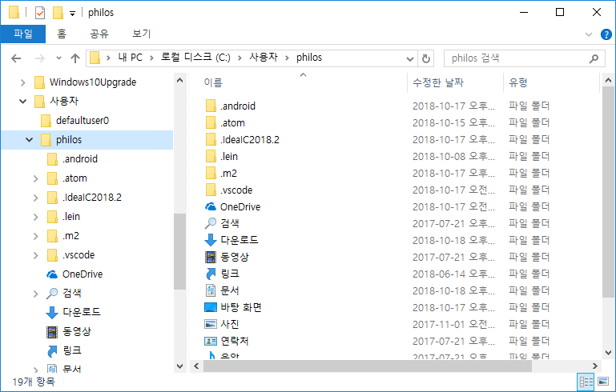
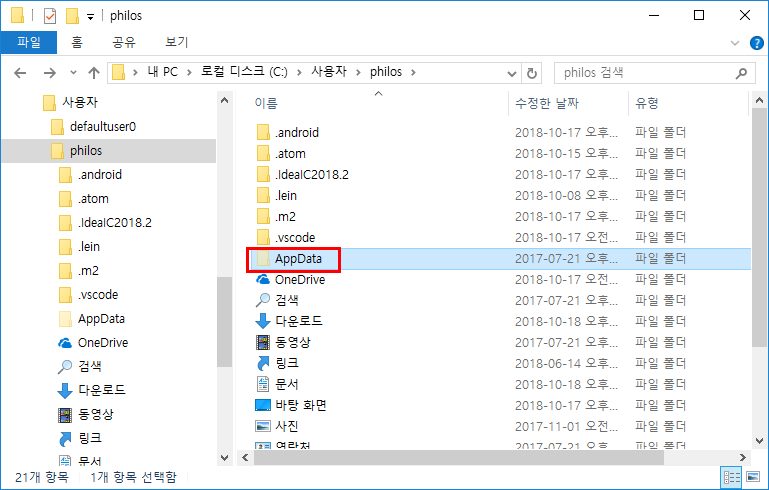

1. Emacs 설치
-
http://ftp.gnu.org/gnu/emacs/windows 페이지를 방문해, 64 비트 Windows용 최신 emacs 버전을 내려 받는다. 여기서는
emacs-26/emacs-26.1-x86_64.zip파일을 내려 받는 것으로 한다. -
내려 받는 압축 파일을 푼 후, 자신이 원하는 폴더로 통쨰로 옮긴다. 여기서는
C:\dev\bin\emacs폴더로 옮기는 것으로 한다.C:\> cd dev\bin\emacs C:\dev\bin\emacs> dir C 드라이브의 볼륨에는 이름이 없습니다. 볼륨 일련 번호: 8059-3BAA C:\dev\bin\emacs 디렉터리 2018-10-18 오후 06:38 <DIR> . 2018-10-18 오후 06:38 <DIR> .. 2018-10-18 오후 06:37 <DIR> bin 2018-10-18 오후 06:37 <DIR> etc 2018-10-18 오후 06:37 <DIR> include 2018-10-18 오후 06:38 <DIR> lib 2018-10-18 오후 06:38 <DIR> libexec 2018-10-18 오후 06:38 <DIR> share 2018-10-18 오후 06:38 <DIR> ssl 0개 파일 0 바이트 9개 디렉터리 9,383,415,808 바이트 남음 C:\dev\bin\emacs> -
bin폴더 아래에 있는runemacs.exe파일을 더블 클릭하면 emacs가 실행된다.
2. init.el 파일 만들기
-
emacs가 실행되면, 먼저
init.el이라는 파일을 읽어 들여, 실행에 필요한 초기화 작업을 수행한다. -
이
init.el파일은 일반적으로사용자\<자신의 사용자 아이디>\AppData\Roaming\.emacs.d\폴더에 위치한다. -
그런데
사용자\<자신의 사용자 아이디>폴더에 들어가 보아도AppData라는 폴더는 아래의 화면에서처럼 일반적으로 보이지 않게 설정되어 있다.
-
이
AppData폴더를 보이게 하려면, '파일 탐색기’를 실행한 후, [파일 — 폴더 및 검색 옵션 변경 — 보기 — 고급 설정 — 숨김 파일 및 폴더 — 숨김 파일, 폴더 및 드라이브 표시] 메뉴를 선택해 주고확인버튼을 눌러 준다. -
이제
사용자\<자신의 사용자 아이디>폴더를 다시 확인해 보면, 다음과 같이AppData폴더가 보일 것이다.
-
AppData\Roaming\.emacs.d폴더의 위치에init.el파일을 만들어 준 후, 다음의 내용을 입력한 후 저장한다.;; Hangul (set-language-environment "Korean") (prefer-coding-system 'utf-8) (setq input-method-verbose-flag nil) ;; melpa 관련 설정 (require 'package) (add-to-list 'package-archives '("melpa-stable" . "https://stable.melpa.org/packages/") t)
3. Cider 설치
-
emacs를 실행한다.
*